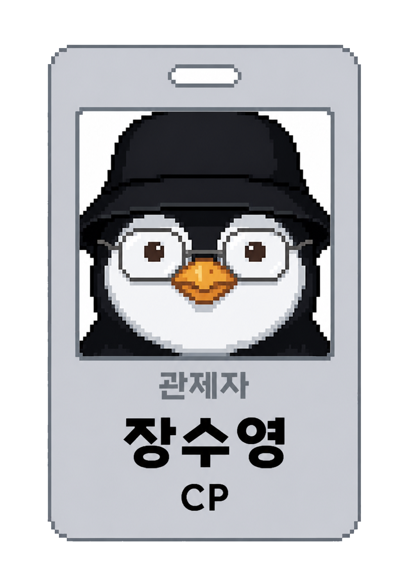
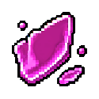
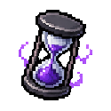

TEAM PROJECT 03
5 PEOPLE · 7 WEEKS

TEAM LEAD · CHIEF PRODUCER · JANG SU YOUNG
팀장 장수영
5인 팀의 P0 기준과 제작 방향을 통합하고,
기획을 실제 화면·캐릭터·오디오·발표 산출물로 연결했습니다.
MY RESPONSIBILITY
CP · P0/리소스 총괄
기획 기준 통합 · UI/캐릭터 프로토타이핑 · 오디오 디렉팅 · 발표 웹 제작
- 장르
- 2.5D PvE Extraction
- 기간
- 2026.06.11 — 07.28
- 팀
- 기획·개발 5인
- 환경
- Unity · URP · AnyPortrait
CORE ACHIEVEMENTS
내 핵심 성과
초기 콘셉트를 핵심 플레이·구현 범위·완료 기준으로 구체화해 최종 P0 정의서로 고정
UI 레이아웃 7종, 에셋 77종, 캐릭터 동작 8종 제작·검수
SFX·BGM 58종을 장면과 기능 단위로 정리해 구현 전달
5인의 기록 156건을 조사해 인터랙티브 발표 웹으로 제작
인터랙티브 발표 웹 열기 ↗DEMO & EVIDENCE
시연 영상과 직접 제작 증거
CORE DESIGN DOCUMENTS
핵심 기획서
OPTIONAL DEEP DIVE
본문에는 결론만, 근거는 원문에 남겼습니다.
면접관이 범위 결정과 구현 전달 방식을 더 확인하고 싶을 때만 문서를 엽니다.
WORLD & CONCEPT
세계관 한 장 요약

침몽도시는 집단 무의식이 도시의 형태로 굳어진 꿈의 세계입니다.
다이버는 위험한 기억 균열로 들어가 파편을 회수하고, 현실로 탈출해 잃어버린 관계와 기록을 복원합니다.
- 침몽도시 집단 무의식이 중첩된 탐색 공간
- 다이버 기억 균열에 진입하는 회수자
- 기억 파편 성장·관계·서사를 연결하는 자원
VISUAL ASSET ARCHIVE
이미지 에셋 정리
8 캐릭터·Live2D
36 아이템·포인터
34 UI 프레임·배경
25 HUD·아이콘·기물





FINAL PRESENTATION
최종 발표 자료
DOWNLOAD & REPOSITORY